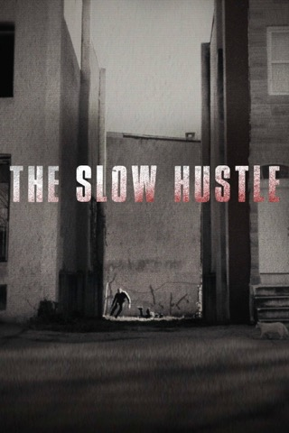

About the film

August 19, 2023
, 1:00 PM
A bullet to the head of a Baltimore police detective sets off a constantly unraveling mystery that ultimately reveals the depth of corruption and the profound complexities of policing in urban America today. When Baltimore police detective Sean Suiter is shot and killed on duty the day before he is scheduled to testify before a federal grand jury, a mystery unravels that raises questions about what story he was going to tell about his fellow officers. The now infamous Gun Trace Task Force investigation exposed members of an elite task force that proved to be one of the dirtiest police units in US history. From director Sonja Sohn, of
Baltimore Rising
and star of HBO’s
The Wire
, comes an American tale of how the culture of corruption penetrates the system at every level, destroying lives, as ordinary citizens, hardworking local journalists, and a few rebellious public servants endeavor to pick up the pieces.
This program is presented by Double Exposure Investigative Film Festival in partnership with the DC Public Library, as part of a new series of year-round screenings of investigative films. Following the screening, we'll have an audience talkback with Justin Fenton, author of
We Own This City: A True Story of Crime, Cops, and Corruption,
moderated by DC journalist Nicki Mayo.
The screening takes place at Mount Pleasant Library, 3160 16th Street, NW.
At the festival
More films on these topics
 Crime & ParodyWill Thwaites2026 · 88 min
Crime & ParodyWill Thwaites2026 · 88 min The Oligarch and the Art DealerAndreas Dalsgaard2026 · 120 min
The Oligarch and the Art DealerAndreas Dalsgaard2026 · 120 min The Black SwanMads Brügger2025 · 90 min
The Black SwanMads Brügger2025 · 90 min Cover-UpLaura Poitras, Mark Obenhaus2025 · 117 min
Cover-UpLaura Poitras, Mark Obenhaus2025 · 117 min Trade SecretAbraham Joffe2025 · 98 min
Trade SecretAbraham Joffe2025 · 98 min- Police DiveTeresa Carante2024 · 10 min